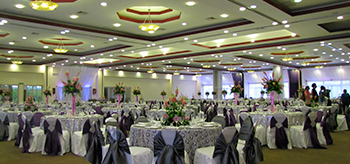

Descansar
Habitaciones para viajes individuales, en pareja o en grupo.
Elegir habitaciónSan Miguel, El Salvador
Descanso, encuentros y momentos para compartir. Bienvenido a Trópico Inn, en el corazón del oriente salvadoreño.
Explorar habitacionesTu estancia, a tu manera
Una visita de trabajo, un fin de semana o una celebración. Descubre las opciones de alojamiento del proyecto y elige la que mejor acompaña tu viaje.
Mucho más que una estancia
Habitaciones para viajes individuales, en pareja o en grupo.
Elegir habitaciónEspacios para reunirse y compartir momentos especiales.
Consultar por eventosEl restaurante y la piscina forman parte de la experiencia del hotel.
Consultar servicios
Encuentros que importan
Reúne a tus invitados en un mismo lugar. Consulta las opciones de eventos, reuniones y alojamiento a través del canal oficial del hotel.
Planear un encuentro